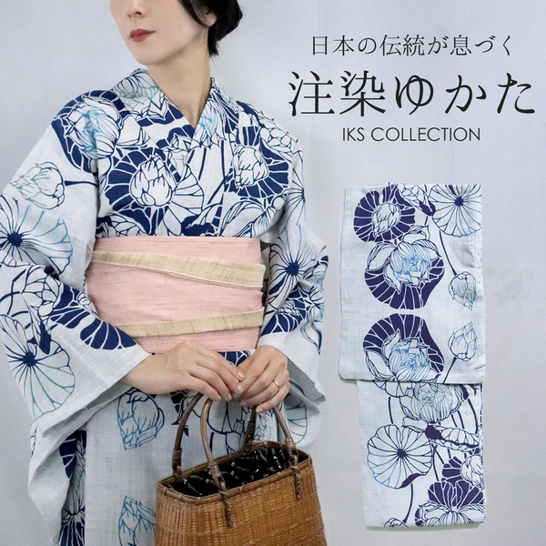
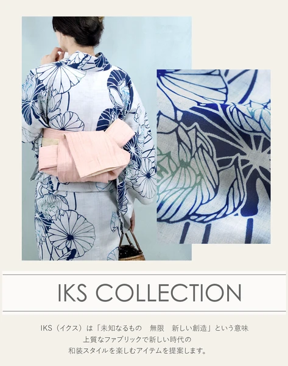
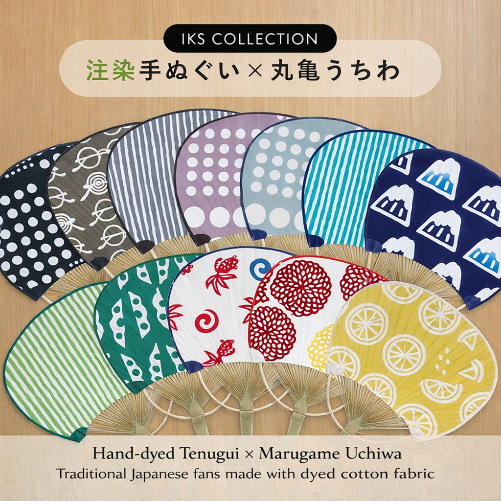
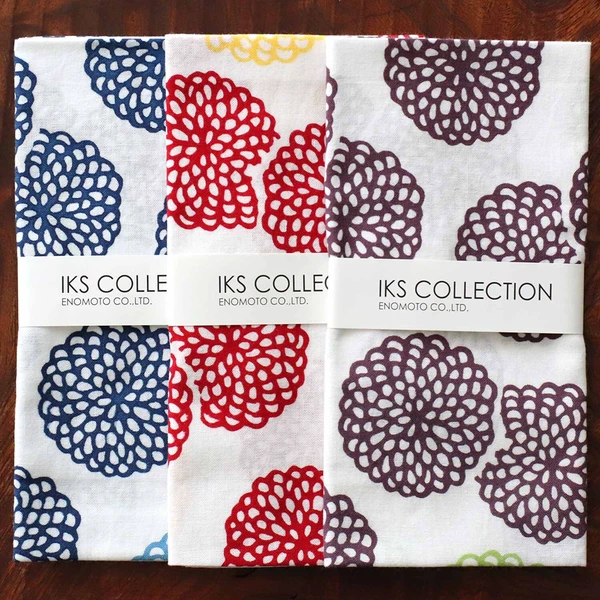
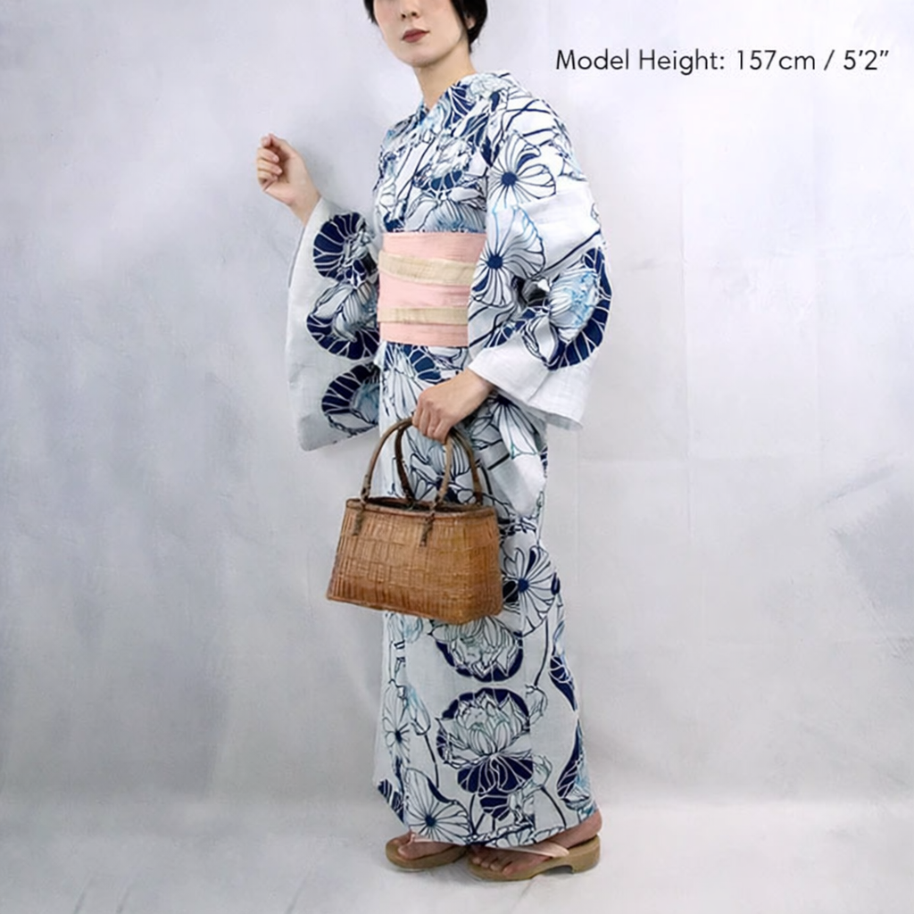
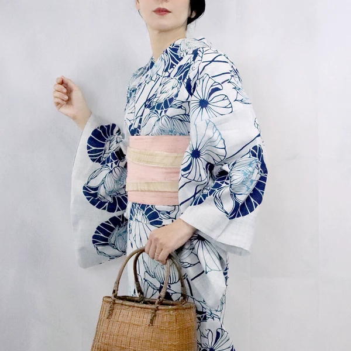
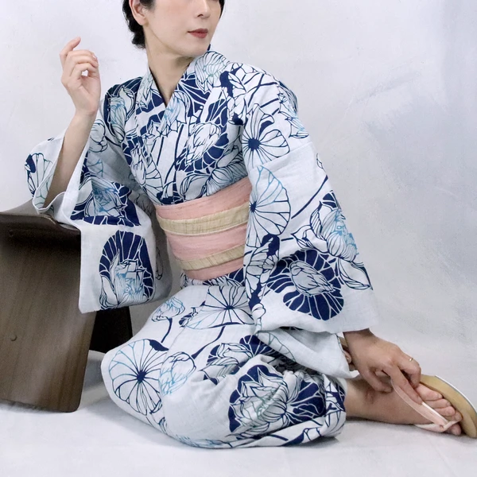
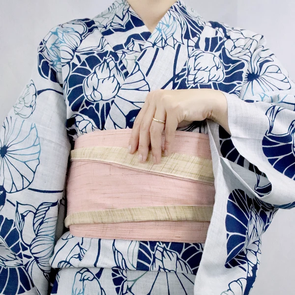
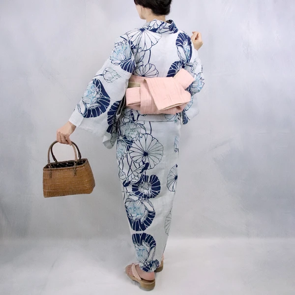
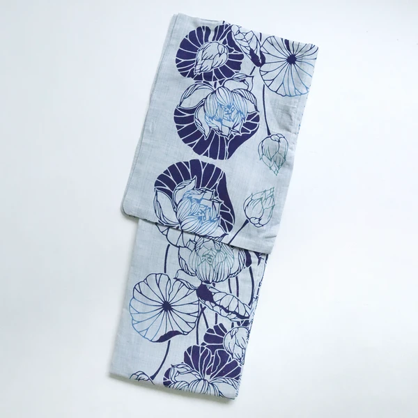
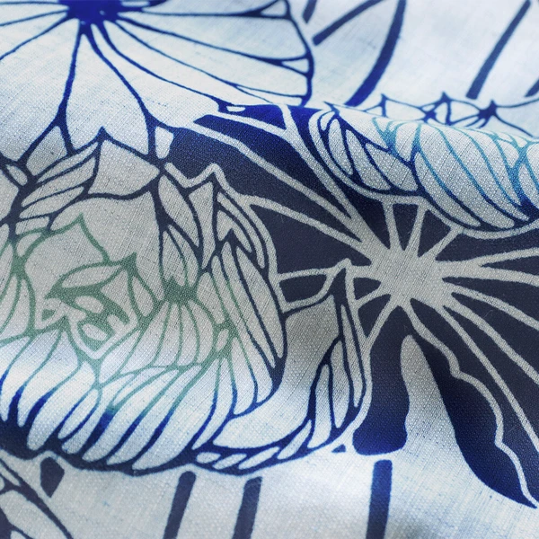
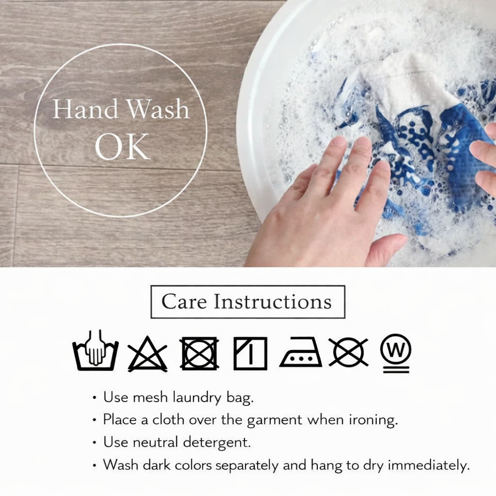
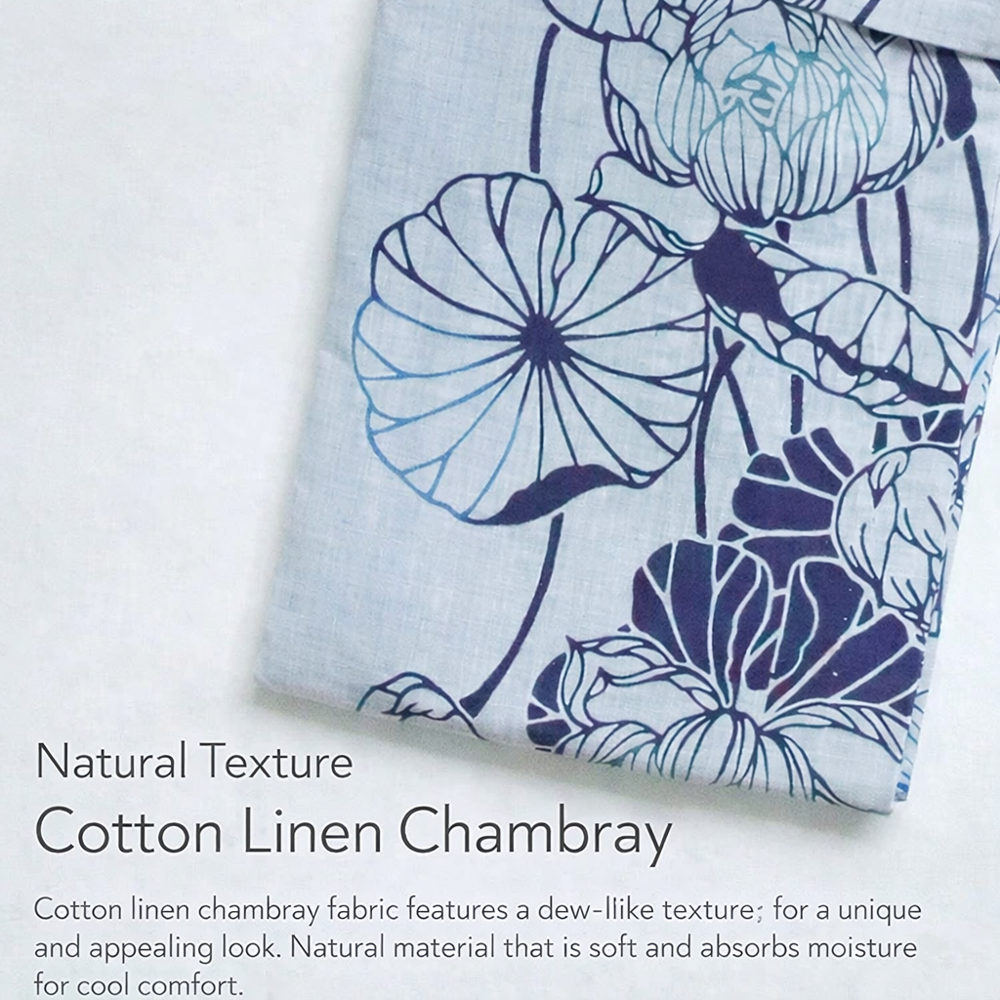
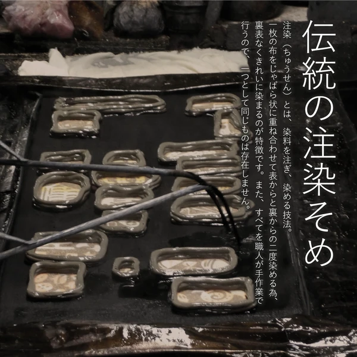
Yorokobi Set
Complete 3-Piece Summer Elegance Collection
Find absolute joy (Yorokobi) in this elegant summer kimono set. The beautifully rendered lotus pattern over soft, flowing Ryobijin material creates an air of unmatched lightness. Complete with a stunning Red Chrysanthemum Tenugui and a matching traditional cloth, it is perfect for festivals, fireworks events, or elevating your luxurious at-home loungewear.
Ensemble Components
Navy Pine Uchiwa
A sophisticated navy fan with a traditional pine needle pattern. Handcrafted with a bamboo frame for an authentic feel.
Red Chrysanthemum Tenugui
A vibrant red 100% cotton towel featuring a classic chrysanthemum motif. Hand-dyed to perfection.
Yukata Material: 100% Premium Ryobijin Polyester (Dry-touch, Wrinkle-resistant)
Uchiwa Material: Natural Bamboo & Paper/Fabric
Tenugui Material: 100% Chita Cotton (Chusen Dyed)
Estimated Delivery: 3–7 business days via Express international courier.
Packaging: Each set is carefully folded and protected for international shipping.
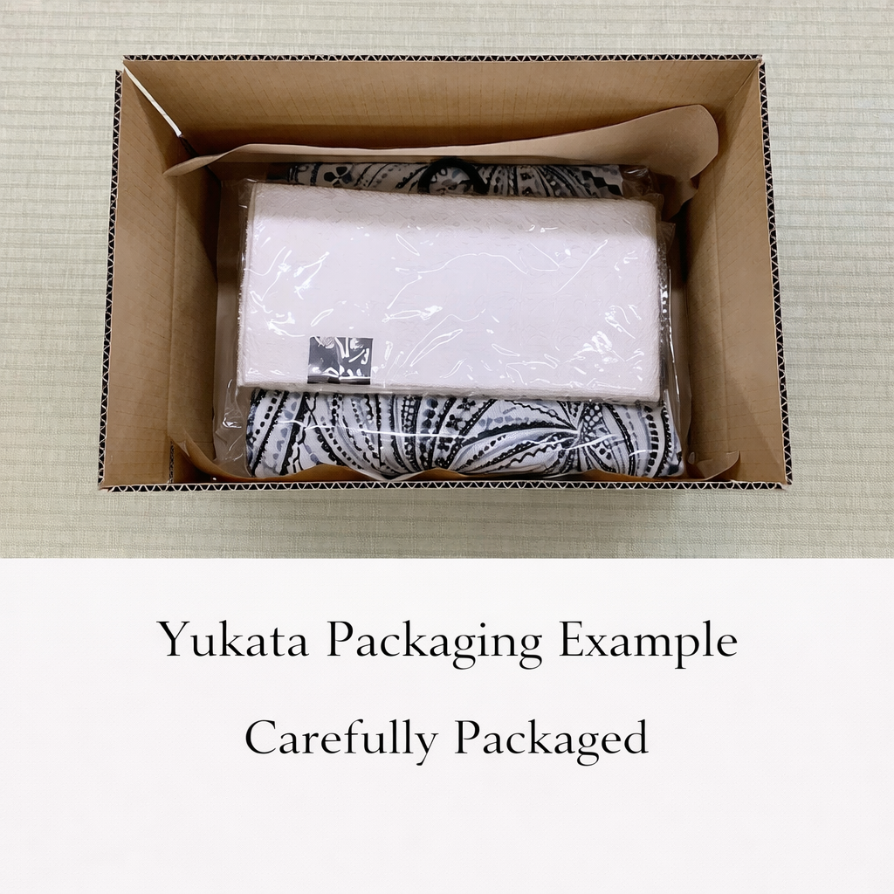
Tenugui: Wash separately as traditional Chusen dye may bleed slightly during early washes.